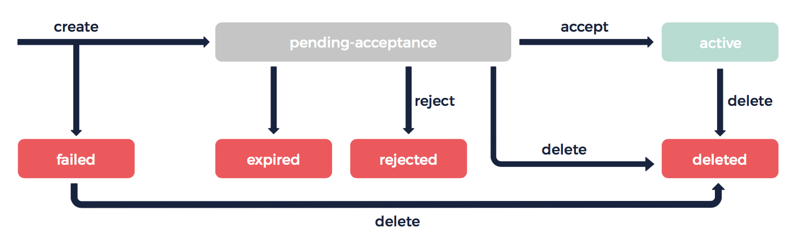
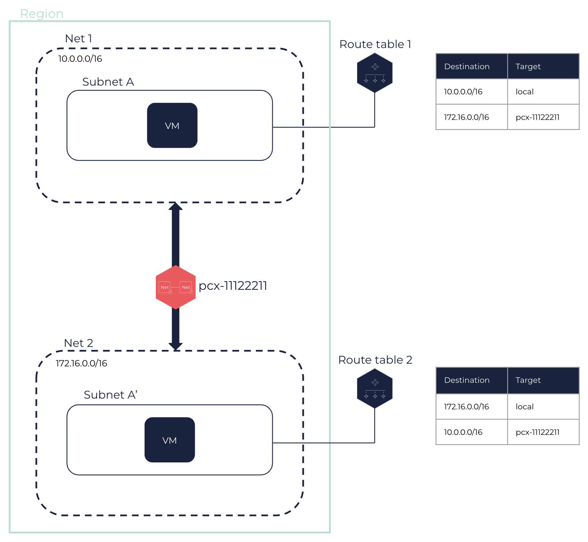

About Net Peerings
A Net peering enables two Nets to communicate with each other using a private connection. VMs in peered Nets can access each other.
General Information
Peered Nets can belong to the same account, or to different accounts. You can create multiple peering connections for each of your Nets. However, you cannot create more than one peering connection between the same two Nets at the same time.
A peering connection is a private connection using private IPs. Peered Nets must not have overlapping CIDR blocks, and must be located in the same Region. However, their Subnets can be located in different Subregions. For more information, see About Regions and Subregions.
|
Peered Nets must contain at least one virtual machine (VM) each before the creation of the Net peering. |
|
Example of two non-overlapping CIDR blocks:
|
When you create a connection, a request is sent to the Net with which you want to connect. The owner of this Net must accept the request for the connection to be established. For more information, see the Lifecycle section below.
|
Once the connection is created, network traffic between the peered Nets is possible. You must update their route tables and security groups to allow traffic. For more information, see the Network Configuration section below.
A Net peering is a direct, one-to-one, and non-transitive connection. That is, peered Nets cannot communicate with other Nets they are not directly peered with. Two Nets each peered with the same third Net cannot use it as a transit point to access each other.

|
To ensure redundancy and high-availability, you can peer two Nets whose Subnets are located in different Subregions. |
Lifecycle
Once requested, a Net peering can go through several state changes. With each state, different actions are possible.

-
failed: The creation of the Net peering has failed. This happens, for example, when the Nets are located in different Regions, or when their CIDR blocks overlap. A failed connection cannot be accepted, rejected, nor deleted. -
pending-acceptance: The connection is awaiting action from the owner of the accepter Net, who can accept or reject it. In the meantime, the owner of the requester Net can still delete the request. If no action is taken, the request expires after 7 days. -
expired: The request has expired. The connection can no longer be accepted, rejected, or deleted. -
rejected: The request was rejected by the owner of the accepter Net. No connection is created between the Nets. The connection can no longer be accepted or deleted. -
active: The connection was accepted by the owner of the accepter Net. A connection is created between the Nets. Either owner of the peered Nets can delete it. -
deleted: The Net peering was deleted by either owner of the peered Nets.
Connections in the failed, expired, or deleted states remain visible for 1 hour.
Network Configuration
Route Tables
To enable traffic between two peered Nets, you need to update the route tables associated with their Subnets.
Both owners of the Nets must create a new route with the CIDR block of the other Net as destination, and the ID of the Net peering as target. This enables VMs to route traffic between the two Nets.
|
We recommend waiting until the Net peering is in the |

For more information, see About Route Tables and Tutorial: Setting Up a Net Peering.
Security Groups
To allow traffic between the VMs of the peered Nets, you need to update the security groups associated with their VMs.
Both owners of the Nets must add the appropriate rules allowing outbound and inbound flows to and from the Subnet of the peer Net. For more information, see About Security Groups and Tutorial: Setting Up a Net Peering.
Related Pages